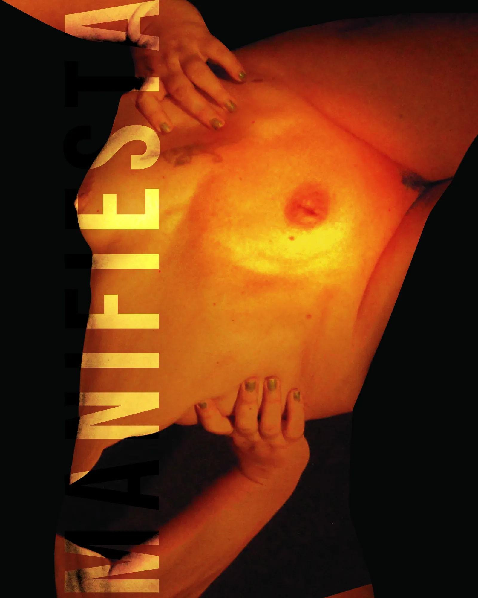

Cadáver Exquisito
Cadáver Exquisito es un ensayo visual que explora las tensiones entre el cuerpo, el poder, la memoria y las múltiples formas de violencia que atraviesan nuestra existencia. Una obra que se construye desde la fragmentación, la intervención y la posibilidad de producir nuevos sentidos a partir de aquello que parece roto, descartado o silenciado.
El título recupera el procedimiento surrealista del cadáver exquisito para pensar la imagen como un territorio en disputa, donde nada está definitivamente dicho y cada fragmento puede alterar el sentido del conjunto.
Mi fotografía no pretende ser neutral. Me interesa incomodar la mirada, cuestionar las representaciones dominantes y construir imágenes capaces de interpelar lo político desde lo sensible. En Cadáver Exquisito, el cuerpo deja de ser únicamente objeto de representación para convertirse en archivo, testimonio y territorio de resistencia.
La obra fue seleccionada para Impronta Misionera 2024, en el Centro del Conocimiento de Posadas, y también formó parte de experiencias expositivas e intervenciones colectivas, entre ellas una presentación en Casa Popular Artigas, con intervención digital de Lucila.
Cadáver Exquisito es, en definitiva, una pregunta sobre lo que hacemos con los restos de nuestra historia, con las imágenes heredadas y con aquello que todavía insiste en permanecer.
Porque incluso lo que intentaron borrar conserva la posibilidad de decir algo.



Obra
Seguir recorriendo